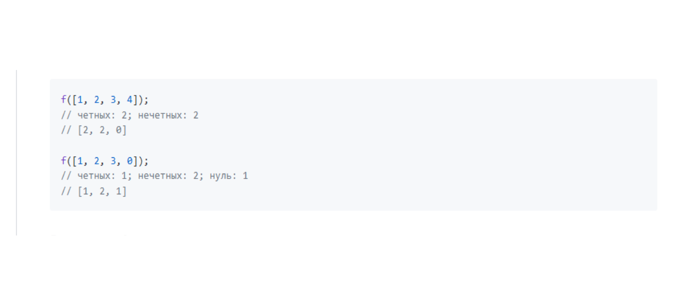

Написать функцию, которая посчитает и выведет в консоль количество четных и нечетных элементов в массиве. Если в массиве есть нулевой элемент, то он учитывается и выводится отдельно. Возвращаемое значение -- массив вида [<кол-во четных>, <кол-во нечетных>, <кол-во нулей>]. При выполнении задания необходимо учесть, что массив может содержать не только числа, но и, например, знаки, null и тд. 